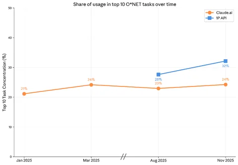
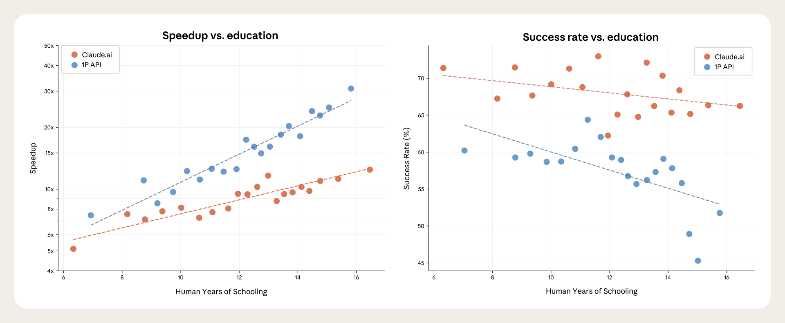
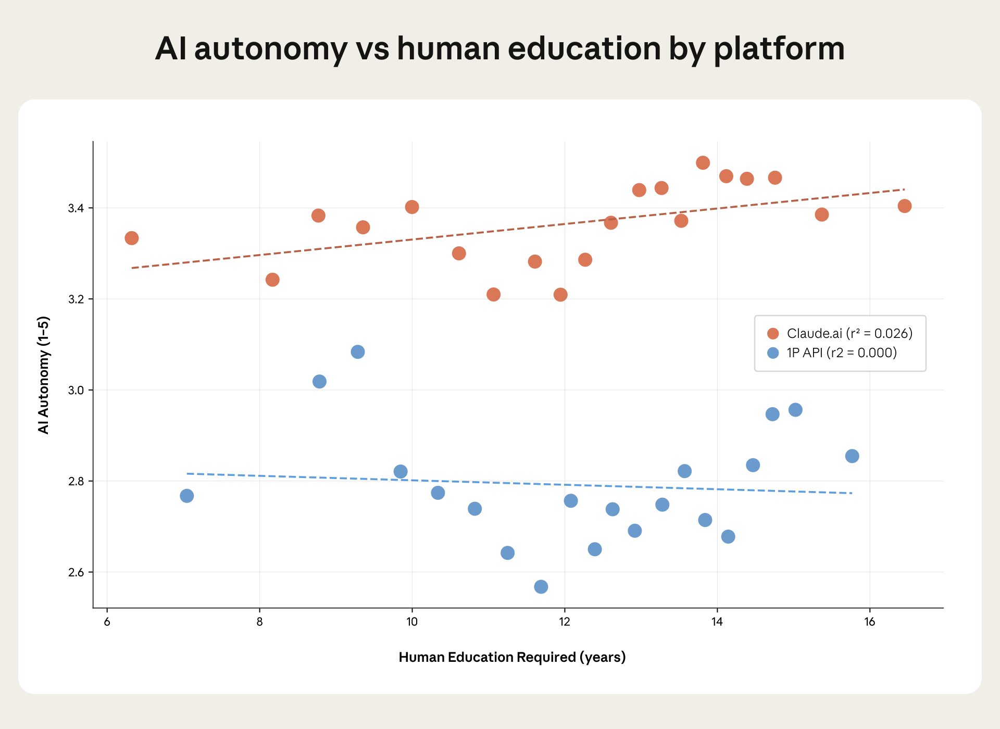
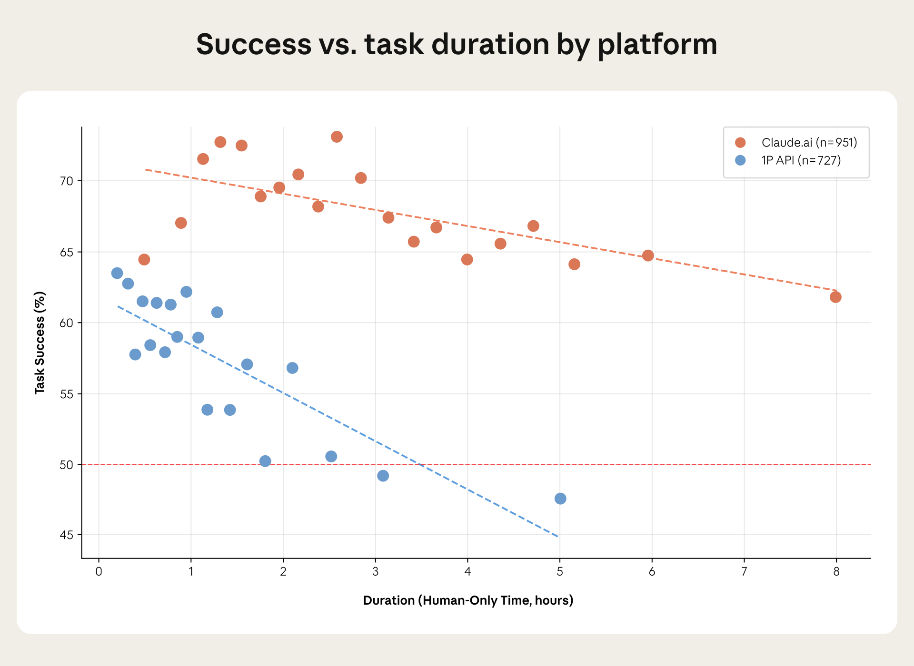

Anthropic经济指数：AI使用新度量
DataHot 速览
Anthropic发布经济指数报告，基于2025年11月Claude.ai及一方API的匿名对话，提出用户与AI技能、任务复杂度、自主性、成功率、用途五个维度。报告称Claude.ai可见超3000种工作任务，前10大任务占样本对话24%，增强型对话略超一半，而一方API以自动化使用为主。美国、印度、日本、英国、韩国在Claude.ai使用上领先，全球采用差异与人均GDP相关，美国各州采用差异与计算机和数学职业人员比例相关。数据覆盖消费者与企业使用及国家地区细分。
为什么值得关注：该报告用大规模真实对话样本量化AI在经济中的使用结构，为数据从业者理解AI采用差异、任务自动化与增强模式提供可核验的基准数据。
本文目录 38 节
- Introduction
- How is AI reshaping the economy?
- What has changed since our last report
- Introducing and analyzing our new economic primitives
- A new window for understanding AI’s impact on the economy
- Chapter 1: What has changed since our last report
- Overview
- Shifting patterns of usage across tasks and associated occupations
- Augmentation is again dominant on Claude.ai
- Persistent regional concentration
- Signs of faster Claude diffusion in the US among low usage states
- Chapter 2: Introducing economic primitives
- Dimensions of AI use that matter for economic impacts
- Selecting and validating the new measures
- The primitives' value is in what they can predict
- Primitives highlight how use cases differ
- Tasks and primitives differ between Claude.ai and API users
- Chapter 3: How Claude is used varies by geography
- Overview
- Claude is mostly used for work, but use cases diversify with adoption
- International and US adoption differ across economic primitives
- Institutional factors shape the relationship between task success and education years
- How humans prompt is how Claude responds
- Higher income and higher usage are related to more augmentation
- Conclusion
- Chapter 4: Tasks and productivity
- Tradeoffs in task acceleration
- Task Horizons in Real-World Usage
- Revisiting occupation penetration with effective AI coverage
- AI’s impact on the task content of jobs
- Revisiting the aggregate productivity implications of Claude usage
- Conclusion
- Concluding Remarks
- Authors & Acknowledgements
- First Author Block*:
- Second Author Block:
- Acknowledgements
- Citation
原文
Introduction
How is AI reshaping the economy?
This report introduces new metrics of AI usage to provide a rich portrait of interactions with Claude in November 2025, just prior to the release of Opus 4.5. These “primitives”—simple, foundational measures of how Claude is used, which we generate by asking Claude specific questions about anonymized Claude.ai and first-party (1P) API transcripts—cover five dimensions relevant to AI’s economic impact: user and AI skills, how complex tasks are, the degree of autonomy afforded to Claude, how successful Claude is, and whether Claude is used for personal, educational, or work purposes.
The results reveal striking geographic variation, real-world estimates of AI task horizons, and a basis for revised assessments of Claude's macroeconomic impact.
The data we release alongside this report are the most comprehensive to date, covering five new dimensions of AI use, consumer and firm use, and country and region breakdowns for Claude.ai.
What has changed since our last report
In the first chapter, we revisit findings from our previous Economic Index report published in September 2025. We find:
- Claude usage remains concentrated among certain tasks, most of them related to coding While we see over 3,000 unique work tasks in Claude.ai, the top 10 most common tasks account for 24% of our sampled conversations, a slight increase since our last report. Augmentation patterns (conversations where the user learns, iterates on a task, or gets feedback from Claude) edged to just over half of conversations on Claude.ai. In contrast, automated use remains dominant in 1P API traffic, reflecting its programmatic nature.
- Global usage remains persistently uneven while US states converge The US, India, Japan, the UK, and South Korea lead in overall Claude.ai use. Worldwide, uneven adoption remains well-explained by GDP per capita. Within the US, workforce composition plays a key role in shaping uneven adoption as states with more computer and mathematical professionals show systematically more Claude usage.
While substantial concentration remains, since our last report Claude usage has become noticeably more evenly distributed across US states. If sustained, usage per capita would be equalized across the country in 2-5 years.
Introducing and analyzing our new economic primitives
In the second chapter we discuss the motivation for and introduce our new economic primitives, including how they were selected and operationalized, and their limitations. We additionally present evidence that our primitives capture directionally accurate aspects of underlying usage patterns as compared to external benchmarks. In chapters three and four we use these primitives to further investigate implications for adoption and productivity. We find:
- Claude use diversifies with higher adoption and income While the most common use of Claude is for work, coursework use is highest in countries with the lowest GDP per capita, while rich countries show the highest rates of personal use. This aligns with a simple adoption curve story: early adopters in less developed countries tend to be technical users with specific, high-value applications or use Claude for education, whereas mature markets see usage diversify toward casual and personal purposes.
- Claude succeeds on most tasks, but less so on the most complex ones We find that Claude generally succeeds at the tasks it is given, and that the education level of its responses tends to match the user's input. Claude struggles on more complex tasks: As the time it would take a human to do the task increases, Claude’s success rate falls, much like prominent evals measuring the longest tasks that AIs can reliably perform.
- Job exposure to AI looks different when success rates are factored in We also use the success rate primitive to better understand job exposure to AI, calculating the share of each occupation that Claude can perform by weighting task coverage by both success rates and the importance of each task within the job. For some occupations, like data entry keyers and database architects, Claude shows proficiency in large swaths of the job.
- Claude is used for higher-skill tasks than those in the broader economy The tasks we observe in Claude usage tend to require more education than those in the broader economy. If we assume that AI-assisted tasks diminish as a share of worker responsibilities, removing them would leave behind less-skilled work. But this simple task displacement would not affect white-collar workers uniformly—for some occupations it removes the most skill-intensive tasks, for others the least. Without the tasks that we observe Claude performing, travel agents would experience deskilling as complex planning work gives way to routine ticket purchasing and payment collection. Property managers, by contrast, would experience upskilling as bookkeeping tasks give way to contract negotiations and stakeholder management.
A new window for understanding AI’s impact on the economy
These results provide a new window into how AI is currently impacting the economy. Knowing the success rate of tasks gives a more accurate picture of which tasks might be automated, how impacted certain jobs might be, and how labor productivity will change. Measuring differential performance by user education sheds light on inequality effects.
Indeed, the close relationship between education levels in inputs and outputs signals that countries with higher educational attainment may be better positioned to benefit from AI, independent of adoption rates alone.
This data release aims to enable researchers and the public to better understand the economic implications of AI and investigate the ways in which this transformative technology is already having an effect.
Chapter 1: What has changed since our last report
Overview
Because frontier AI model capabilities are improving rapidly and adoption has been swift, it is important to regularly take stock of changes in how people and businesses are using such systems—and what this usage implies for the broader economy.1
In this chapter we analyze how Claude usage and diffusion patterns changed from August 2025 to November 2025 just prior to the release of Opus 4.5. We make four observations:
- Usage remains highly concentrated across tasks: The ten most common tasks represent 24% of observed usage on Claude.ai, up from 23% in our last report. For first-party (1P) API enterprise customers, concentration among tasks increased more notably: the top ten tasks now represent 32% of traffic, up from 28% in the last report.
- Augmentation is once again more common than automation on Claude.ai: In our previous report we noted that automated use had risen to exceed augmented use on Claude.ai, perhaps capturing both improving capabilities and greater familiarity among users with LLMs. Data from November 2025 points to a broad-based shift back toward augmented use on Claude.ai: The share of conversations classified as augmented jumped 5pp to 52% and the share deemed automated fell 4pp to 45%.2 Product changes during this period—including file creation capabilities, persistent memory, and Skills for workflow customization—may have shifted usage patterns toward more collaborative, human-in-the-loop interactions.
- Within the US, lower usage states have relatively faster gains in adoption Within the US, usage per capita remains largely shaped by how well-matched the workforce is to broader Claude usage: For example, states with a larger share of workers in computer and mathematical occupations tend to have higher usage. Indeed, the top five US states account for nearly half (50%) of all usage despite representing only 38% of the working-age population. Nevertheless, there are early signs of rapid regional convergence in adoption: usage has increased relatively faster for states that had lower usage in our last report. If sustained, usage per capita would be equalized across the country in 2-5 years, a pace of diffusion roughly 10x faster than the spread of previous economically consequential technologies in the 20th century.3 While this is consistent with rapid AI adoption and diffusion, this estimate comes with uncertainty given that it is based on a change observed over a three month period. Diffusion may ultimately proceed more slowly in the months and years to come.
- Global usage shows little sign of increasing or decreasing regional convergence Globally, Claude usage per capita—as captured by the Anthropic AI Usage Index (AUI)—remains highly uneven and strongly correlated with GDP. These gaps are stable: we see no evidence that low-use countries are catching up or that high-use countries are pulling away.
Shifting patterns of usage across tasks and associated occupations
Even though frontier LLMs have an impressive range of capabilities relevant to every facet of the modern economy, Claude usage remains very concentrated among a small number of tasks. As compared to nearly one year ago, consumer usage on Claude.ai is modestly more concentrated: The share of conversations assigned to the ten most prevalent O*NET tasks was 24% in November 2025, 1pp higher than in August and up from 21% in January 2025. The most prevalent task in November 2025—modifying software to correct errors—alone represented 6% of usage.
In our last Anthropic Economic Index Report we began tracking business adoption patterns by studying Claude usage among 1P API customers. The ten most common tasks grew from 28% of API records in August to 32% in November. Rising concentration among a small set of tasks suggests the highest-value applications continue to generate outsized economic value even as models have become more capable at a wider range of tasks. As with Claude.ai the most common task among API customers was modifying software to correct errors, which accounted for one in ten records.

Indeed, computer and mathematical tasks—like modifying software to correct errors—continue to dominate Claude usage overall, representing a third of conversations on Claude.ai and nearly half of 1P API traffic. Such dominance has subsided on Claude.ai: the share of conversations on Claude.ai assigned to such (mostly) coding-related tasks is down from a peak of 40% in March 2025 to 34% in November 2025. At the same time, the share of transcripts assigned to computer and mathematical tasks among 1P API traffic edged higher from 44% in August to 46% in November 2025 (Figure 1.2).
The second largest share of Claude.ai usage in November 2025 was in the Educational Instruction and Library category. This corresponds mostly to help with coursework and review, and the development of instructional materials. Such usage has risen steadily since our first report, up from 9% of conversations on Claude.ai in January 2025 to 15% in November.
The share of usage on Claude.ai for Arts, Design, Entertainment, Sports, and Media tasks increased between August and November 2025 as Claude was used in a growing share of conversations for writing tasks, primarily copyediting and the writing and refinement of fictional pieces. This jump in the prevalence of design- and writing-related tasks reversed a steady decline across earlier reports. For both Claude.ai and API customers, there was a drop in the share of conversations/transcripts where Claude was used for Life, Physical, and Social Science-related tasks.
Perhaps the most notable development for API customers was the increase in the share of transcripts associated with Office and Administrative Support related tasks, which rose 3pp in August to 13% in November 2025. Because API use is automation-dominant, this suggests that businesses are increasingly using Claude to automate routine back-office workflows such as email management, document processing, customer relationship management, and scheduling.4
Augmentation is again dominant on Claude.ai
How AI will affect the economy depends not just on the tasks Claude is used for but the way that users access and engage underlying model capabilities. Since our first report, we have classified conversations into one of five interaction types, which we group into two broader categories: automation and augmentation.5
Figure 1.3 plots how automated versus augmented use has evolved over time since we first started collecting this data one year ago. In January 2025, augmented use of Claude was dominant: 56% of conversations were classified as augmentation compared to 41% automated.6 In August 2025, more conversations were classified as automated as compared to augmented.
This was a notable development since it suggested that rapid improvements in model capabilities and platform functionality coincided with users increasingly delegating tasks entirely to Claude. This was evident in the “directive” collaboration mode, which is further grouped as automation. Directive conversations are those in which users give Claude a task and it completes it with minimal back-and-forth. From January 2025 to August 2025 the share of such directive conversations rose from 27% to 39%.7
Three months later, the share of directive conversations had fallen 7pp to 32% in November 2025 as augmentation once again became more prevalent on Claude.ai than automation. Nevertheless, the automation share was still elevated as compared to nearly one year ago when we first began tracking this measure, suggesting that the underlying trend is still toward greater automation even as the August spike overstated how quickly it was materializing.
While we see some evidence of a shift toward soft skill usage on Claude.ai with design, management, and education now higher, the shift back toward augmented use was broad-based in November (Figure 1.4). The rise in augmented use was driven mainly by users iterating with Claude to complete tasks (“task iteration”) rather than asking Claude to explain concepts (“learning”). See Figure 1.5 for common words associated with the three most common interaction modes across O*NET tasks and bottom-up descriptions of requests made of Claude.
Persistent regional concentration
In our previous report, we introduced the Anthropic AI Usage Index (AUI), a measure of whether Claude is over- or underrepresented in a given geography relative to the size of its working-age population. The AUI is defined as
An AUI above 1 indicates that a country uses Claude more intensively than its population alone would predict, while an AUI below 1 indicates lower-than-expected usage. For example, Denmark has an AUI of 2.1, meaning its residents use Claude at roughly twice the rate its share of the global working-age population would suggest.
A key fact about Claude usage globally is that it is geographically concentrated: a small number of countries comprise an outsized share of use. From a global perspective, little changed in this respect between August and November 2025. Indeed, the left panel of Figure 1.6 shows that the AUI concentration across countries was essentially unchanged between our last report and this report.
By contrast, usage became more evenly distributed across US states from August to November 2025: the Gini coefficient, a standard measure of equality, fell from 0.37 to 0.32. While it is important to exercise caution in interpreting short-run changes, this is a relatively large change toward perfect equality in which the AUI is equal to 1 for all states with a Gini coefficient of 0. If the Gini coefficient for the US again falls by 0.05 every three months, then parity of usage would be reached in roughly two years.
What shapes patterns of usage within the US and around the world? In our previous report we emphasized the key role played by income differences globally: Variation in Claude usage across countries is largely accounted for by variation in GDP per capita. In Chapter 3 we revisit the importance of income in shaping not just usage intensity but also patterns of usage around the world.
Within the US, income is less clearly a predictor of usage. Instead, what appears to matter most is the composition of each state’s workforce and how well-matched the workforce is to Claude capabilities as reflected in task-level usage. States that have a higher share of workers in computer and mathematical occupations—like Washington D.C., Virginia, and Washington—tend to have higher usage per capita. Quantitatively, each 1% increase in the share of such tech workers in a state is associated with 0.36% higher usage per capita (Figure 1.7). This alone accounts for nearly two-thirds of the cross-state variation in AUI.
While we would intuitively expect Claude usage to be higher in states with more tech workers, this pattern holds more generally: Usage per capita is higher in states with more workers in occupations where Claude usage is overrepresented as compared to the US workforce (e.g., Arts, Design, Entertainment, Sports and Media) or with relatively fewer workers in occupations where Claude usage is low as compared to the national economy (e.g., Transportation and Material Moving). This can be seen by calculating the Kullback–Leibler (KL) divergence between the composition of each state’s workforce and the global composition of Claude usage. States with a lower KL divergence—and thus with a workforce that looks more similar to Claude usage patterns—tend to have higher usage per capita.
Signs of faster Claude diffusion in the US among low usage states
While differences in workforce composition appear to play a role in shaping regional adoption within the US, early evidence suggests Claude is diffusing considerably faster than historical precedent would predict. Economically consequential technologies have historically taken around half a century to achieve full diffusion across the US (Kalanyi et al., 2025). By contrast, comparing Claude adoption rates in November 2025 to three months prior, we estimate that parity in adoption per capita across US states—as measured by the AUI—could be reached within 2–5 years. This estimate comes with a high degree of uncertainty as the precision of our estimates cannot rule out much slower rates of diffusion.
We generate this estimate through the lens of a simple model of diffusion, which we briefly describe here. We model diffusion as proportional convergence toward a common steady state of equalized usage per capita in which each state s has an AUI equal to 1:
Under this model, the log deviation of AUI from steady state (AUI = 1) shrinks by a factor of β every three months, implying a half-life of ln(.5)/ln(β) quarters. For example, with quarterly data a value of β = 0.99 implies a half-life of about 17 years. To illustrate, starting from an initial AUI of 2, this means AUI would decline to around 1.4 after 17 years and to around 1.1 after 50 years. We take β = 0.99 as a sensible benchmark because it implies a pace of diffusion similar to economically consequential technologies in the 20th century.
This model of convergence motivates the following regression specification8:
Naively estimating this equation by ordinary least squares (OLS) yields an estimate of β̂ ≈ 0.77. Weighted least squares (WLS) where we weight by each state’s workforce yields an estimate of β̂ ≈ 0.76 (Figure 1.8). Both are statistically distinguishable from 1 at conventional levels. Taken at face value, these estimates imply that it would take little more than two years for each state's AUI to close most of the gap to 1.
A concern with estimating convergence this way is that our AUI estimates are subject to sampling noise and other variation unrelated to diffusion. This can produce classical attenuation bias: even if AUI is not actually changing, our estimate of β could end up meaningfully below one.
To address this, we estimate the model by two-stage least squares (2SLS), instrumenting the log of AUI in August 2025 with the composition of each state's workforce, measured by its proximity to overall Claude usage patterns. The logic behind this instrument is that workforce composition is a strong predictor of Claude usage (relevance) but being measured independently, is expected to be uncorrelated with sampling noise in our AUI estimates (validity). As noted above, states with more workers in high-Claude-usage roles do tend to have systematically higher usage per capita.
The 2SLS estimates imply modestly slower convergence: β̂ ≈ 0.89 unweighted and β̂ ≈ 0.86 when weighting by each state’s working-age population. However, these estimates are less precise, and only the former is statistically distinguishable from 1 at the 10% level. Despite implying a slower convergence than OLS, the 2SLS estimates still imply rapid diffusion: just four to five years for the log deviation of each state's AUI to shrink by 90%.
That said, our estimates are based on just three months of data. And while the 2SLS specification may help address sampling noise, considerable uncertainty remains. We will revisit this question of the pace of diffusion in future reports.
1 As with previous reports, all our analysis is based on privacy-preserving analysis. Throughout the report we analyze a random sample of 1M conversations from Claude.ai Free, Pro and Max conversations (we also refer to this as “consumer data” since it mostly represents consumer use) and 1M transcripts from our first-party (1P) API traffic (we also refer to this as “enterprise data” since it mostly represents enterprise use). Both samples come from November 13, 2025 to November 20, 2025. We continue to manage data according to our privacy and retention policies, and our analysis is consistent with our terms, policies, and contractual agreements. For 1P API data, each record is a prompt-response pair from our sample period which in some instances is mid-session for multi-turn interactions.
2 The share of conversations on Claude.ai that were classified into neither automation nor augmentation categories fell from 3.9% to 3.0%.
3 See, for example, Kalanyi et al (2025): “Second, as the technologies mature and the number of related jobs grows, hiring spreads geographically. This process is very slow, taking around 50 years to disperse fully.”
4 With our bottom-up analysis of 1P API traffic we see Claude used to "Generate personalized B2B cold sales emails" (0.47%), "Analyze emails and draft replies for business correspondence" (0.28%), "Build and maintain invoice processing systems" (0.24%), "Classify and categorize emails into predefined labels" (0.23%), and "Manage calendar scheduling, meeting coordination, and appointment booking" (0.16%).
5 At a high level, we distinguish between automation and augmentation modes of using Claude. Automation encompasses interaction patterns focused on task completion: Directive: Users give Claude a task and it completes it with minimal back-and-forth; Feedback Loops: Users automate tasks and provide feedback to Claude as needed; Augmentation focuses on collaborative interaction patterns: Learning: Users ask Claude for information or explanations about various topics; Task Iteration: Users iterate on tasks collaboratively with Claude; Validation: Users ask Claude for feedback on their work.
6 These interaction modes are not mutually exhaustive. In some instances, Claude determines that a sampled conversation does not match any of the five interaction modes.
7 In this report we use Sonnet 4.5 for classification whereas in our previous Economic Index report we used Sonnet 4. We previously found that different models can generate different classification outcomes, though these effects tend to be modest.
8 We include a constant term in the regression since it should be equal to zero under the null hypothesis. Across all our specifications, the constant term is estimated to be close to and statistically indistinguishable from zero.
Chapter 2: Introducing economic primitives
The strength of the Anthropic Economic Index lies in showing not only how much AI is used, but how it is used. In prior reports, we showed which tasks Claude is used for, and how people collaborate with Claude. These data have enabled external researchers to analyze labor market shifts (e.g., Brynjolfsson, Chandar & Chen, 2025).
In this edition of the Anthropic Economic Index, we expand the breadth of data available to external researchers by providing insights on five economic “primitives”, by which we mean simple, foundational measures of the ways that Claude is used, which we generate by asking Claude to answer specific questions about the anonymized transcripts in our sample. Some of our primitives encompass several such questions, and others use a single indicator.
Because AI capabilities are advancing so rapidly and the economic effects will be unevenly experienced, we need a breadth of signals to uncover not just how Claude is used but also to inform what impact this technology will have.
Dimensions of AI use that matter for economic impacts
This report introduces five new economic primitives beyond the one we already measure, collaboration patterns (whether users automate or augment their tasks with Claude). These primitives capture five dimensions of a human-AI conversation: 1) task complexity, 2) human and AI skills, 3) work, coursework or personal use case, 4) the AI’s level of autonomy, and 5) task success (see Table 2.1). AI autonomy captures something different from our existing automation/augmentation distinction. For example, “Translate this paragraph into French” is high automation (directive, minimal back-and-forth) but low AI autonomy (the task requires little decision-making from Claude).
Task complexity captures that tasks can vary in their complexity, including how long they take to complete and how difficult they are. A "debugging" task in O*NET could refer to Claude fixing a small error in a function or comprehensively refactoring a codebase—with very different implications for labor demand. We measure complexity through estimated human time to complete tasks without AI, time spent completing tasks with AI, and whether users handle multiple tasks within a single conversation.
Human and AI skills address how automation interacts with skill levels. If AI disproportionately substitutes for tasks requiring less expertise while complementing higher-skilled work, it could be another form of skill-biased technical change—increasing demand for highly skilled workers while displacing lower skilled workers. We measure whether users could have completed tasks without Claude, and the years of education needed to understand both user prompts and Claude's responses.
Use case distinguishes professional, educational, and personal use. Labor market effects most directly follow from workplace use, while educational use may signal where the future workforce is building AI-complementary skills.
AI autonomy measures the degree to which users delegate decision-making to Claude. Our latest report documented rising "directive" use where users delegate tasks entirely. Tracking autonomy levels—from active collaboration to full delegation—helps forecast the pace of automation.
Task success measures Claude’s assessment of whether Claude completes tasks successfully. Task success helps assess whether tasks can be automated effectively (can a task be automated at all?) and efficiently (how many attempts would it take to automate a task?). That is, task success matters for both the feasibility and the cost of automation labor tasks.
Selecting and validating the new measures
The new dimensions of AI use captured in our data were informed by our recent work on the productivity effects of Claude, feedback we received from external researchers, recent literature on AI’s economic impact through the lens of human capital and expertise (Vendraminell et al., 2025), and deliberation within our economic research team. Our main selection criteria were expected economic relevance, complementarity of dimensions, and whether Claude could classify conversations along that dimension with directional accuracy.
We propose that multiple simple primitives, even if somewhat noisy and not perfectly accurate by themselves, can together provide important signals on how AI is being used. We therefore mainly tested for directional accuracy.
For classifying task duration with and without AI, we used minimally modified versions of our prior productivity work. For net new classifiers1, implemented via our privacy-preserving tooling, our validation process was as follows. We designed multiple potential measures to capture concepts such as task complexity. For Claude.ai, we evaluated the classifier performance compared to a human researcher on a small set of transcripts in which users gave feedback to Claude.ai and for which we thus have permission to look at underlying transcripts. For first-party API (1P API) data, we validate the classifiers using a mix of internal and synthetic data. Neither data sources are fully representative of Claude.ai or 1P API traffic, but they allow us to check that the classifiers are working on data that resembles real usage data, while ensuring privacy.
Based on initial performance, we revised the classifiers that needed tweaking or discarded classifiers that did not perform well. Interestingly, we find that in some instances (e.g., to measure task success), a simple classifier performed better than a nuanced, complex classifier when compared to human ratings. We then compared performance of classifier versions with vs. without chain of thought prompting, and decided to keep chain of thought prompting only for three facets (human time estimate, human with AI time estimate, and AI autonomy) where we found that it substantially improved performance. We selected a final set of nine new classifiers for the five primitives, all of which are directionally accurate even if they may deviate somewhat from human ratings.
The primitives' value is in what they can predict
Our goal was to create classifiers that are straightforward to implement and in combination provide potentially important economic signals. While we are very confident in the directional accuracy of the new measures (e.g., tasks with higher average years of education needed to understand the human prompt are likely more complex), none of the measures should be taken as exact or definitive (e.g., Claude.ai may somewhat underestimate the human education years needed for many tasks).
Even so, the primitives enrich our understanding of how people use AI. Systematic relationships emerge across primitives, regions, and tasks—patterns we explore in depth in Chapters 3 and 4. That these relationships are intuitive and consistent suggests the primitives capture relevant aspects of how people and businesses use Claude.
External benchmarks reinforce this. In our productivity work, Claude’s time estimates correlate with actual time spent on software engineering tasks. Figure 2.1 shows that our human education measure correlates with actual worker education levels across occupations. These validations suggest individual primitives are directionally correct—and combining them may provide additional analytical value, such as enriching productivity estimates with task success rates or constructing new measures of occupational exposure.
Ultimately, the strongest validation will come from the primitives’ ability to capture meaningful variation in labor market outcomes. The data we release enable external researchers to analyze economic shifts in new ways. Early work has been encouraging—the automation/augmentation distinction from prior reports has already been used by external researchers to analyze labor market shifts (Brynjolfsson, Chandar & Chen, 2025).
Primitives highlight how use cases differ
To illustrate how the primitives distinguish between different types of AI use, we examine two contrasting request clusters: software development ("Help debug, develop, and optimize software across multiple programming domains") and personal life management ("Assist with personal life management and everyday tasks"). Figure 2.2 shows the primitive profile for each cluster alongside global averages.
Task complexity. Claude estimates that software development requests would take a competent professional approximately 3.3 hours to complete without AI—close to the global average of 3.1 hours. Personal life management tasks are estimated to be simpler, averaging 1.8 hours. Estimated human-AI collaboration time is similar across both (~15 minutes), showing this primitive varies less than other primitives for these two tasks.
Human and AI skills. Software development requests draw on more specialized knowledge: both human prompts and AI responses are estimated to require approximately 13.8 years of education to understand, compared to 9.1–9.4 years for personal life management requests. Claude estimates that users would be able to complete personal life management requests by themselves 96% of the time, versus 82% for software development requests—indicating that Claude provides more essential support for technical work.
Use case. Claude classifies 64% of software development requests as work-related, compared to just 17% for personal life management. This illustrates that Claude can be used for very different purposes. Overall, Claude.ai use is 46% work, 19% coursework, and 35% personal.
AI autonomy. Both clusters show similar estimated autonomy levels (~3.5 on a 1 to 5 scale), near the global average. This means that both software development and personal life management tasks, on average, afford Claude a similar autonomy to make decisions on how to complete the task.
Task success. Claude assesses personal tasks as successfully completed 78% of the time, versus 61% for software development. Harder tasks—those requiring more specialized knowledge and where users could not easily complete them alone—show lower estimated success rates.
Tasks and primitives differ between Claude.ai and API users
As in our previous report, we find major differences in the tasks and primitives in Claude.ai conversations compared to the 1P API data. Part of this reflects the nature of the interaction: Claude.ai transcripts can include multi-turn conversations, while the API data we analyze is limited to single input-output pairs. This is because API requests arrive independently, with no metadata linking them to prior exchanges. This means we can only analyze them as isolated user-assistant pairs rather than full conversation trajectories.
Overall, API usage is overwhelmingly work-related (74% vs. 46%) and directive (64% vs. 32%), with three-quarters of interactions classified as automation compared to less than half on Claude.ai (see Figure 1.3).
Claude.ai users, by contrast, engage in more back-and-forth: task iteration and learning modes are far more common, and tasks tend to be more lengthy—both in terms of human time with AI (15 minutes vs. 5 minutes) and the estimated time a human would need to complete the task alone (3.1 hours vs. 1.7 hours). Claude.ai also shows higher task success rates (67% vs. 49%), which may reflect the benefits of multi-turn conversation, where users can clarify, correct course, and iterate toward a solution. Claude.ai users also give the AI more autonomy on average, and are more likely to bring tasks they couldn't complete alone.
These differences are also reflected in the occupational distribution of tasks. API usage is heavily concentrated in Computer & Mathematical tasks (52% vs. 36%), consistent with its use for programmatic, automation-friendly workflows like code generation and data processing. Office & Administrative tasks are also more prevalent in the API (15% vs. 8%), reflecting routine business operations suited to delegation. Claude.ai, by contrast, sees substantially more Educational Instruction tasks (16% vs. 4%)—coursework help, tutoring, and instructional material development—as well as more Arts, Design, and Entertainment tasks (11% vs. 6%). Claude.ai also has a longer tail of human-facing categories like Community & Social Service and Healthcare Practitioners, where users seek advice, counseling, or information on personal matters.
These patterns suggest that 1P API deployments concentrate on tasks amenable to systematic automation, while Claude.ai serves a broader range of use cases including learning, creative work, and personal assistance.
Chapter 4 explores task-level variation in greater depth.
1 A classifier is a model that assigns a given input (e.g. a user conversation) a specific output (e.g. the use case “work”). In this report, we use Claude as a classifier, meaning that we prompt Claude to select a specific output and then use Claude’s response as the output (see Table 2.1 for the prompts).
2 Throughout this report, we use binned scatterplots to show bivariate relationships. We divide observations into 20 equally-sized bins based on the x variable, then plot the average x and y values for each bin. The leftmost dot, for example, represents the averages for observations in the lowest 5% of the x distribution.
Chapter 3: How Claude is used varies by geography
Overview
In this chapter, we analyze geographic variation in Claude usage patterns using a privacy-preserving¹ analysis of 1 million Claude.ai conversations². We make five observations:
- Claude is mostly used for work, but use cases diversify with adoption: Work and personal use cases are more common in higher-income countries, while coursework use cases are more common in lower-income countries. This echoes findings from our prior report and aligns with recent work by Microsoft.
- GDP and human education predict adoption globally and within the US: A 1% increase in GDP per capita is associated with a 0.7% increase in Claude usage per capita at the country level. Human education—Claude's estimate of years of formal education needed to understand the human prompt—correlates positively with the Anthropic AI Usage Index at both levels.
- Other primitives predict adoption differently at global vs. US levels: At the country level, higher usage correlates with shorter tasks and less AI autonomy. At the US state level, these relationships are not statistically significant, though work use correlates positively with adoption.
- Relationships between primitives depend on context: Task success is negatively associated with human education across countries, but positively within US states. However, when controlling for other primitives, the US relationship becomes insignificant.
- How humans prompt is how Claude responds: The education levels of human prompts and AI responses are nearly perfectly correlated (r > 0.92 at both levels). Higher per capita usage countries also show more augmentation—using Claude as a collaborator rather than delegating decisions entirely.
Claude is mostly used for work, but use cases diversify with adoption
Our data, relying on a privacy-preserving1 analysis of 1 million Claude.ai conversations2, reveals striking geographic differences in how Claude is adopted. Claude is predominantly used for work, across the globe and across the United States. However, there is geographic variation in use cases. At the global level, the Balkans and Brazil have the highest relative share of work use (see Figure 3.1), and Indonesia stands out with the highest share of coursework. At the US state level, New York stands out as the state using Claude relatively the most for work.
Use case differences are related to a country’s per capita income, which, in turn, is related to per capita AI adoption. We observe that work use cases and personal use cases of Claude are more common in higher income countries, while coursework use cases are more common in lower income countries (see Figure 3.2). Interestingly, these findings converge with recent work by Microsoft showing that AI use for school is associated with lower per capita income, whereas AI use for leisure is associated with higher per capita income.
Multiple factors could contribute to these patterns:
- Personal use cases may be more common as AI adoption increases and more diverse users use AI, or existing users explore wider applications of AI. In contrast, countries with lower per capita adoption (which is correlated with lower per capita income) may be focused on specific use cases such as coding or as coursework.
- Countries differ in their ability to pay for Claude, and coursework use cases may be better suited to free Claude usage than complex use cases in work areas such as software engineering.
- Users in higher-income countries may have other resources, such as free time and continuous Internet access, that enable non-essential personal use cases.
International and US adoption differ across economic primitives
The economic primitives introduced in this report allow us to analyze some of the factors that may drive differential adoption. When analyzing the relationship between the Anthropic AI Usage Index (AUI) and core economic primitives as well as GDP, we observe that certain patterns hold for both countries and US states. For example, we replicate the finding from our prior report that GDP is strongly correlated with the AUI (see Figures 3.3 and 3.4). At the country level, a 1% increase in GDP per capita is associated with a 0.7% increase in Claude usage per capita. Human education (how many years of education it takes to understand the human written prompts in a conversation) correlates positively and significantly with the Anthropic AI Usage Index both at the country and at the US state level.
However, the relationship between AUI and the primitives often differs between country and US state level. For example, at the country level, the AUI correlates negatively with the time it would take a human to complete a task without AI, and with how much decision-making autonomy AI is given. At the US state level, these relationships are not statistically significant–likely also due to the smaller sample size for US states. Additionally, we observe a positive correlation between the AUI and Claude.ai use for work at the US state, but not at the country level.
Importantly, the primitives themselves are not necessarily causal factors—we don't know if income or education are truly driving adoption, or if they're proxies for other underlying conditions. Many of these factors are highly correlated with one another. For example, at the US state level, human education years show a strong association with the Anthropic AI Usage Index in isolation, but this relationship disappears once we control for GDP and other primitives—suggesting education may be capturing variation that's better explained by economic development and other factors.
Institutional factors shape the relationship between task success and education years
Economic and institutional context—such as how education levels vary within a geography—are related to how AI is being used. Interestingly, we observe that task success is negatively associated with human education at the country level, but positively related at the US state level. However, the positive relationship at the state level becomes insignificant when controlling for other primitives (see Figure 3.5). This means the relationship pattern at one level of observation (country) contradicts the relationship pattern at another level (US state). Cross-country, educated populations may attempt harder tasks and therefore see lower success rates. Within homogeneous contexts, education may not improve task success.
How humans prompt is how Claude responds
We find a very high correlation between human and AI education, i.e. the number of years of education required to understand a human prompt or the AI’s response (countries: r = 0.925, p < 0.001, N = 117; US states: r = 0.928, p < 0.001, N = 50). This highlights the importance of skills and suggests that how humans prompt the AI determines how effective it can be. This also highlights the importance of model design and training. While Claude is able to respond in a highly sophisticated manner, it tends to do so only when users input sophisticated prompts.
How models are trained, fine-tuned and instructed affects how they respond to users. For example, one AI model could have a system prompt that instructs it to always use simple language that a middle school student could understand, whereas another AI model may only respond in complex language that would require a PhD education to understand. For Claude, we observe a more dynamic pattern where how the user prompts Claude relates to how Claude responds.
Higher income and higher usage are related to more augmentation
Higher per capita usage countries, which tend to be higher per capita income countries, show lower automation, and less decision-making autonomy delegated to Claude. That is, higher income countries use AI more as an assistant and collaborator rather than letting it work independently. This relationship is not significant at the US state level, perhaps because income variation and use case diversity are more limited within the United States than globally. This mirrors a finding from our 3rd Economic Index report where countries with higher Anthropic AI Usage Index tend to use Claude in a more collaborative manner (augmentation), rather than letting it operate independently (automation).
Conclusion
The striking geographic variation in our data shows that Claude is used in different ways around the world. GDP predicts the Anthropic AI Usage Index at both the country and US state level, and human education—the sophistication of user prompts—correlates with adoption at both levels as well.
Other relationships depend on context. At the country level, higher usage correlates with shorter tasks and less AI autonomy; within the US, these patterns do not hold. Task success and human education show opposite relationships globally versus within the US.
The near-perfect correlation between human and AI education years underscores that how users prompt Claude shapes how it responds. Combined with the finding that higher-usage countries engage Claude more collaboratively, this suggests that the skills required to use AI well may themselves be unevenly distributed.
By measuring the characteristics of conversations with Claude, we find important relationships with broader economic factors such as human capital. These relationships may help predict labor market outcomes and inform a smooth transition to an AI-enabled economy that will require different skillsets.
1 For privacy reasons, our automated analysis system filters out any cells—e.g., countries, and (country, task) intersections—with fewer than 15 conversations and 5 unique user accounts. For bottom-up request clusters, we have an even higher privacy filter of at least 500 conversations and 250 unique accounts.
2 Data in this section covers 1 million Claude.ai Free, Pro and Max conversations from November 13 to 20, 2025, randomly sampled from all conversations in that period. We then excluded content that was flagged as potential trust and safety violations. The unit of observation is a conversation with Claude on Claude.ai, not a user, so it is possible that multiple conversations from the same user are included, though our past work suggests that sampling conversations at random versus stratified by user does not yield substantively different results. Aggregate geographic statistics at the country and US state level were assessed and tabulated from the IP address of each conversation. For geolocation, we use ISO-3166 codes since our provider for IP geolocation uses this standard. International locations use ISO-3166-1 country codes, US state level data use ISO-3166-2 region codes, which include all 50 US states and Washington DC. We exclude conversations originating from VPN, anycast, or hosting services, as determined by our IP geolocation provider.
3 The world map is based on Natural Earth’s world map with the ISO standard point of view for disputed territories, which means that the map may not contain some disputed territories. We note that in addition to the countries shown in gray (“Claude not available”), we do not operate in the Ukrainian regions Crimea, Donetsk, Kherson, Luhansk, and Zaporizhzhia. In accordance with international sanctions and our commitment to supporting Ukraine’s territorial integrity, our services are not available in areas under Russian occupation.
4 “No data” applies to countries with partially missing data. Some territories (e.g., Western Sahara, French Guiana) have their own ISO-3611 code. Some of these have some usage, others have none. Since the Anthropic AI Usage Index is calculated per working-age capita based on working age population data from the World Bank, and population data is not readily available for all of these territories, we cannot calculate the AUI for these territories.
5 We exclude the Seychelles from all geographic analyses because a large fraction of usage we saw during the sampling dates was abusive traffic.
6 We exclude Wyoming from all US state analyses because a large fraction of usage we saw during the sampling dates was abusive traffic.
Chapter 4: Tasks and productivity
In this chapter, we examine how time savings, success rates, and autonomy vary across task types, and what this entails for potential impacts on jobs and productivity.
The patterns reveal that more complex tasks yield greater time savings, but that this trades off against reliability. In a simple task removal exercise inspired by Autor and Thompson (2025), Claude's tendency to cover higher-education tasks produces a net deskilling effect across most occupations, as the tasks AI handles are often the more skilled components of a job.
Claude usage spans a meaningful fraction of tasks across a growing share of occupations. We incorporate success rates into a richer model of job coverage; some occupations with modest coverage see large effects because AI succeeds on their most time-intensive work. Adjusting productivity estimates for task reliability roughly halves the implied gains, from 1.8 to about 1.0 percentage points of annual labor productivity growth over the next decade. However, these estimates reflect current model capabilities, and all signs suggest that reliability over increasingly long-running tasks will improve.
Tradeoffs in task acceleration
Our estimates suggest that, in general, the more complex tasks in our data yield a greater time savings (or “speedup”) from AI. We derive this by having Claude estimate both how long a task would take a human working alone and the duration when human and AI work together, which we validated in previous work. Speedup is then the human-alone time divided by the human-with-AI time. So reducing a 1 hour task to 10 minutes would give a 6x speedup.
The left panel of Figure 4.1 below gives the average speedup against our core measure of task complexity, the human years of schooling required to understand the inputs, all at the O*NET task level1. It shows that in Claude.ai conversations, for example, prompts requiring 12 years of schooling (a high school education) enjoy a speedup of 9x, while those requiring 16 years of schooling (a college degree) attain a 12x speedup. This implies that productivity gains are more pronounced for use cases requiring higher human capital, consistent with evidence that white collar workers are far more likely to adopt AI (e.g., Bick et al 2025).
Throughout the range of task complexity, the speedup is higher for API users. This could reflect the nature of the API data, which is restricted to single-turn interactions, and that API tasks have been specifically selected for automation.

The results also capture a tradeoff, however. More complex tasks have a lower task success rate, as shown in the panel on the right. On Claude.ai, for example, tasks requiring less than a high school education (e.g., answering basic questions about products) attain a 70% success rate, but this drops to 66% for college-level conversations like developing analysis plans. Still, accounting for the difference in success rates—by either excluding low-success tasks or discounting speedups by success probability—does not eliminate the education gradient: complex tasks still show greater net productivity gains.
One way to examine the implications of the education gradient is to look at the share of automation across the education levels required to understand the inputs. If high-education tasks show relatively more automation, it could signal more exposure for white collar workers. Here, though, the message is unclear: the automation share is essentially unrelated to the human levels of education required to write the prompt (Appendix Figure A.1)2. On both Claude.ai and 1P API, tasks across education levels show automation patterns in roughly equal shares.
In what contexts do users defer more to Claude? Claude.ai users give the AI slightly more autonomy when working on more complex tasks. In contrast, API usage shows uniformly lower autonomy at all levels of complexity.

Note though that these distributions do not span the same set of tasks. API usage covers a more narrow swath of tasks in the economy, as seen in the concentration plot in Chapter 1. The high education tasks that experience heavy usage in the API data include security analysis, testing and quality assurance, and code review, whereas Claude.ai users are more likely to have iterative, instructive sessions.
Task Horizons in Real-World Usage

Recent work on AI “task horizons” (Kwa et al., 2025) finds that AI success rates decline with task duration: longer tasks are harder for models to complete. With each successive model generation, however, this decline has become shallower as models succeed on increasingly long tasks. METR operationalizes task horizon primarily as the maximum duration at which a model achieves at least 50% success, and growth in this metric has become a key indicator of AI progress.
Figure 4.3 shows a similar measure using our primitives. The plot shows task-level success rates against the human time required, all at the O*NET task level. In the API data, success rates drop from around 60% for sub-hour tasks to roughly 45% for tasks estimated to take humans 5+ hours. The fitted line crosses the horizontal 50% success line at 3.5 hours, suggesting that API calls attain a 50% success rate for tasks that are 3.5 hours. The analogous time estimate in METR’s software engineering benchmark is 2 hours for Sonnet 4.5 and about 5 hours for Opus 4.5. (The data in this report predates the release of Opus 4.5.)
Claude.ai data tells a different story. Success rates decline far slower as a function of task length. Extrapolating using the linear fit, Claude.ai would hit a 50% success rate at about 19 hours. This may reflect how multi-turn conversation effectively breaks complex tasks into smaller steps, with each turn providing a feedback loop that allows users to correct course.
It’s worth noting that a fundamental difference from the METR setting is selection. METR constructs a benchmark where a fixed set of tasks is assigned to models. In our data, users choose which tasks to bring to Claude. This means observed success rates reflect not just model capability but also user judgment about what will work, the cost of setting up the problem for Claude, and the expected time savings if the task succeeds.
If users avoid tasks they expect to fail, for example, observed success rates will overstate true capability on the full distribution of potential tasks. This selection likely operates on both platforms, but in different ways: API customers select for tasks amenable to automation, while Claude.ai users select for tasks that could benefit from iteration. Also due to this selection effect, there’s no guarantee that more performant models would show improvement in this plot, because users may respond to new models by providing more challenging presentations of otherwise similar O*NET tasks.
Controlled benchmarks like METR’s measure the frontier of autonomous capability. Our real-world data can measure the effective task horizon, reflecting a mix of model capabilities and user behavior, and expanding beyond coding tasks. Both approaches find that AI can be effective for tasks requiring hours of human work.
Revisiting occupation penetration with effective AI coverage
Our earlier work found that 36% of jobs had AI usage for at least a quarter of their tasks, with about 4% reaching 75% task coverage. This measure was based only on the appearance of a task in our data, however. The primitives introduced in this report can help better characterize how AI is changing the work content of occupations.3
First, we find that task coverage is increasing. Combining across reports, 49% of jobs have seen AI usage for at least a quarter of their tasks. But incorporating that task’s share of the job, and Claude’s average success rate, suggests a different set of affected occupations.
We define effective AI coverage as the percent of a worker’s day that can be performed successfully by Claude. It’s calculated as the weighted sum of task success rates, where each task's weight is its share of the worker's time adjusted by how frequently the task occurs. The success rate comes from our primitives, the hours estimate from our previous work on productivity effects, and the frequency estimate from O*NET data, where surveyed workers indicate how often they perform the task.
The plot below shows how the effective AI coverage (y-axis) differs from task coverage alone (x-axis). The two are highly correlated, but with key differences. On the right side of the plot, occupations with high coverage—where almost all tasks appear with some frequency in Claude data—generally fall below the 45-degree line. This suggests that even 90% task coverage does not necessarily indicate large job impacts, since Claude may fail on key covered tasks or miss the most time-intensive ones.
Zooming in, several occupations show large differences in effective AI coverage compared to task coverage. For example, data entry workers have one of the highest effective AI coverage. This is because although only two of their nine tasks are covered, their largest task—reading and entering data from source documents—has high success rates with Claude. AI excels at what they spend most of their time doing.
Medical transcriptionists and radiologists also move up because their covered tasks happen to be their most time-intensive and highest-frequency work. For radiologists, their top two tasks— interpreting diagnostic images and preparing interpretive reports—have high success rates. These occupations have low task coverage because AI can't do the hands-on or administrative work in their job profiles, but it succeeds on the core knowledge work that dominates their workday.
Microbiologists fall below the 45-degree line, suggesting lower effective AI coverage than would be predicted by task coverage alone. Claude covers half of their tasks, but not their most time-intensive: hands-on research using specialized lab equipment.
This measure arguably gives a more realistic picture of job-level AI penetration. However, its implications depend on how often these Claude conversations actually displace or augment work that would otherwise be done by humans. For data entry clerks, AI likely does substitute for tasks previously performed manually. But when a Claude conversation maps to a teacher performing a lecture, it is less clear how this translates to reduced lecture time on the job. In future work, we could leverage our 1P API data to understand which of these tasks are being integrated into production workflows.
AI’s impact on the task content of jobs
Beyond how much of a worker's day AI can successfully perform, a separate question is which tasks get covered, and whether those tend to be the high-skill or low-skill components of the job. Recent research has studied changes in the task mix within jobs to understand AI's impact on wages and employment (Autor and Thompson 2025; Hampole et al 2025). A key insight is that automation's effects depend not just on how many tasks are covered, but on which tasks.
To see how jobs change when we remove the tasks AI can perform, we first construct a measure of the level of skill required for each task. O*NET doesn't provide task-level education requirements, so we train a model that predicts years of schooling from task embeddings, using the BLS's occupation-level education as the target4. This way, a low-education occupation may still have a high-skill task if it looks like those that tend to exist in high-education occupations. For example, Legal Secretaries is a 12-year education occupation, but the task “Review legal publications and perform database searches to identify laws and court decisions relevant to pending cases” is predicted to require 17.7 years because it resembles tasks typically performed by lawyers and paralegals.
The data shows that Claude tends to cover tasks that require higher levels of education. The mean predicted education for tasks in the economy is 13.2 years. For tasks that we see in our data, the mean prediction is about a year higher, 14.4 years (corresponding to an Associate’s degree). This aligns with the occupation-level results from earlier reports, showing more Claude usage among white collar occupations.
We next calculate how removing AI-covered tasks shifts the average education level of what remains. Overall, the net first-order impact is to deskill jobs, since AI removes tasks that require relatively higher levels of education. One job that experiences such deskilling is technical writers, which loses tasks like "Analyze developments in specific field to determine need for revisions" (18.7 years) and "Review published materials and recommend revisions or changes in scope, format" (16.4 years), leaving tasks like "Draw sketches to illustrate specified materials" (13.6 years) and "Observe production, developmental, and experimental activities" (13.5 years). Travel agents also experience deskilling because AI covers tasks like "Plan, describe, arrange, and sell itinerary tour packages" (13.5 years) and "Compute cost of travel and accommodations" (13.4 years), while tasks like "Print or request transportation carrier tickets" (12.0 years) and "Collect payment for transportation and accommodations" (11.5 years) remain. Several teaching professions experience deskilling because AI addresses tasks like grading, advising students, writing grants, and conducting research without being able to do the hands-on work of delivering lectures in person and managing a classroom.
Some jobs see average education levels increase. Real estate managers experience upskilling because AI covers routine administrative tasks—maintaining sales records (12.8 years), reviewing rents against market rates (12.6 years)—while tasks requiring higher-level professional judgment and in-person interaction remain, like securing loans, negotiating with architecture firms, and meeting with boards.
These patterns illustrate how jobs may evolve over the coming years as their task content adjusts in response to AI. If the education level can be interpreted like expertise in Autor and Thompson's analysis, their framework might predict that wages will fall and employment will increase for technical writers and travel agents; conversely, real estate managers will specialize in complex negotiations and stakeholder management, shrinking employment while increasing wages.5
However, our education-based measure differs from Autor and Thompson's expertise concept: their framework would label some tasks as high expertise where ours specifies low education—for example, the Electrician task "Connect wires to circuit breakers, transformers, or other components." And these predictions are based on current Claude usage patterns, which will shift as models are trained on new capabilities and users discover new applications—potentially changing which tasks are covered and whether the net effect is deskilling or upskilling.
Revisiting the aggregate productivity implications of Claude usage
In earlier work, we estimated that widespread adoption of AI could increase US labor productivity growth by 1.8 percentage points annually over the next decade. Here we revisit that analysis, incorporating the task success primitive introduced in this report and a richer treatment of task complementarity.
Based on the speedups associated with tasks with at least 200 observations in our sample of 1M Claude.ai conversations,6 we replicate our previous finding that current-generation AI models and current usage patterns imply a productivity effect of 1.8 percentage points per year over the next decade.7
With the inclusion of 1P API data, we can assess whether implied labor productivity effects differ based on enterprise Claude deployment patterns. Two countervailing forces are at play: API usage is more concentrated in a narrower set of tasks and occupations (particularly coding-related work), which would tend to reduce implied effects; but task-level speedups are higher on average among API tasks, as implied by Figure 4.1. These forces largely offset: the API sample likewise implies a 1.8 percentage point increase in labor productivity over the next decade.
A salient critique of this analysis is that it fails to account for model reliability. If workers must validate AI output, the productivity benefits will be smaller than raw speedups suggest. To assess how quantitatively important this channel might be, we incorporate the task success primitive introduced in this report, multiplying task-level time savings by task-specific success rates before aggregating.8
This adjustment has a meaningful effect: implied productivity growth falls from 1.8 to 1.2 percentage points per year for the next decade based on Claude.ai usage, and to 1.0 percentage points for API traffic. Yet, even after accounting for reliability, the implied impact remains economically significant—a sustained increase of 1.0 percentage point per year for the next ten years would return US productivity growth to rates that prevailed in the late 1990s and early 2000s.A second critique concerns task complementarity. If some tasks are essential and cannot easily be substituted, then overall productivity effects will be constrained regardless of speedups on other tasks. Teachers may prepare lesson plans more efficiently with AI while having no impact on time spent with students in the classroom.
To operationalize this idea, we impose some structure on how we aggregate task-level time savings within occupations but otherwise add up occupational efficiency gains as in the main analysis. Specifically, we suppose that within each occupation tasks are combined according to a Constant Elasticity of Substitution (CES) aggregator, where each task is weighted by the estimated time spent on each task as calculated in our earlier analysis of the productivity effects implied by Claude usage.9
The key parameter is the elasticity of substitution across tasks, σ. When the elasticity of substitution is less than one, tasks are complements and those tasks that are not sped up by AI become bottlenecks for broader productivity gains. Alternatively, when the elasticity of substitution is greater than one, then workers can allocate toward the more productive tasks—thereby amplifying the overall time savings at the occupational level. An elasticity of substitution equal to one is a special case that replicates the main analysis above.
Figure 4.6 reports the results of this exercise for different values of task substitutability. As expected, when the elasticity of substitution is equal to one the implied productivity effect is the same as in our baseline analysis: An increase in labor productivity growth of ~1.8 percentage points per year over the next decade implied by both Claude.ai and API samples.
When tasks are complements, however, the implied aggregate labor productivity impact declines sharply as the economic effects are bottlenecked by tasks that AI speeds up the least. For example, at =0.5 the implied overall labor productivity effect is 0.7-0.9 percentage points per year—around half the size as implied by our baseline estimates. Additionally adjusting for task success further reduces the implied productivity effects to 0.8pp for Claude.ai and 0.6pp for API.
On the other hand, when the elasticity of substitution is greater than one, the implied labor productivity based on pre-Opus 4.5 usage patterns is materially higher. For example, at =1.5 the implied labor productivity effect rises to 2.2-2.6 percentage points per year, consistent with greater specialization in tasks where AI provides the largest speedups.
In both cases the implied productivity impact based on API traffic is more responsive to the degree of task substitutability. This is consistent with the fact that there is a larger share of API traffic concentrated in fewer tasks and associated occupations as compared to Claude.ai: When tasks are complements, this concentration amplifies the bottleneck problem; when they are substitutes, it amplifies productivity gains from task specialization.
What this analysis shows is that the productivity effects of automation may ultimately be constrained by bottleneck tasks that elude AI automation for the time being. And the labor market implications of increasingly capable AI could be similarly affected by such forces. For example, Gans and Goldfarb (2026) argue that the presence of bottleneck tasks within jobs means that partial AI automation can lead to an increase in labor income as such tasks increase in economic value (at least until a job is entirely automated).
Conclusion
The upshot of this chapter is that the impact of AI on the economy is unlikely to be uniform. As our effective AI coverage framework illustrates, the labor market implications for different workers will hinge on how reliable frontier AI tools are for their most central tasks.
But the labor market effects may also depend on the skill requirements of tasks that AI can proficiently handle relative to the rest of the economy. Indeed, we find that removing tasks Claude can already handle from the economy would produce a net deskilling effect: the tasks remaining for humans have lower educational requirements than those handled by AI.
While highly suggestive, this may miss an important detail: the most complex tasks where Claude is used tend also to be those where it struggles most. Rather than displacing highly skilled professionals, this could instead reinforce the value of their complementary expertise in understanding AI's work and assessing its quality.
The counterpart to these transformative labor market effects is the broader impact on growth and productivity. On the one hand, incorporating task reliability into our analysis diminishes the implied effect on labor productivity growth as informed by current Claude usage patterns. If bottleneck tasks bind, the implied impact diminishes further. On the other hand, the continuing growth in model capabilities suggests that both task coverage and task success may increase, which, in turn, could increase productivity impacts.
1 When we study the correlation between primitives with the O*NET, we restrict to tasks appearing in at least 100 conversations to reduce measurement error. In the coverage analysis, we use all tasks above the privacy threshold of 15.
2 Our online appendix is available at https://huggingface.co/datasets/Anthropic/EconomicIndex.
3 See also Tomlinson et al (2025) for a related AI applicability score.
4 We generate embeddings for each task statement using a pretrained sentence transformer (all-mpnet-base-v2) and predict education with Ridge regression.
5 On the other hand, some historical evidence suggests that when technologies automating job tasks appear in patent data, employment and wages subsequently fall for exposed occupations (Webb 2020).
6 When we first assessed the aggregate productivity implications of Claude usage, we relied on a sample of 100k Claude.ai conversations from Fall 2025. Based on the set of tasks for which we observed speedups, we estimated that labor productivity could be 1.8 percentage points higher per year over the next decade. Expanding the sample to 1M observations means that we need to take a stand on how to handle very infrequently occurring tasks—which are very common given that usage follows a power law, as we documented in our past report. We choose a threshold of 0.02% because it replicates our previous results for our sample of Claude.ai conversations. For privacy-preserving reasons, we only ever analyze tasks with at least 15 observations, or an implied threshold of 0.015% for a 100k sample. And so our results are internally consistent across samples. If we do not impose a restriction on our 1M sample and assume that efficiency gains for any task in our sample, even those with just 15 observations out of one million, the implied aggregate labor productivity growth over the next decade would be roughly 5% percentage points per year—a mechanical increase based on a the much larger set of tasks included.
7 As before, this result is based on applying Hulten’s Theorem to task-level productivity shocks and assuming that the corresponding one-time increase in total factor productivity materializes over the course of a decade alongside capital deepening effects. 8 As a reminder, for aggregating to implied labor productivity we calculate task-level efficiency gains as the log difference between human time without AI and with AI. There are certainly other ways to adjust based on task reliability. If tasks in our sample are composed of sub-tasks with heterogeneous AI applicability, and workers optimally deploy AI only on sub-tasks where it is effective, then scaling the efficiency gain by the success rate captures the extensive margin of AI adoption within a task.
9 We use a CES (constant elasticity of substitution) production function to aggregate task-level time savings to economy-wide productivity impacts. The elasticity parameter σ governs how easily workers can substitute between tasks. When σ=1, we apply Hulten's theorem directly: the aggregate productivity gain equals the wage-share-weighted sum of log speedups across tasks. For σ≠1, we use a two-level aggregation: first, within each occupation, we compute an occupation-level speedup as a CES aggregate of task speedups weighted by time fractions, using ρ=(σ-1)/σ. Then we apply Hulten's theorem to these occupation-level speedups. When σ<1 (complements), productivity gains are bottlenecked by tasks with the smallest speedups. When σ>1 (substitutes), workers can specialize in tasks where AI provides the largest speedups, amplifying aggregate gains. For tasks without observed AI speedup data, we assume no productivity change. We thank Pascual Restrepo for suggesting this particular exercise.
Concluding Remarks
This fourth Anthropic Economic Index Report introduces economic primitives—foundational characteristics of AI use—that show how Claude is used by both consumers and firms. We use Claude to estimate the extent to which usage varies along these dimensions; these measures are directionally accurate and, taken together, provide important signals even if individual classifications are imperfect.
Our findings carry significant implications for how AI will reshape economies and labor markets. Notably, Claude tends to be used more, and appears to provide greater productivity boosts, on tasks that require higher education. If these tasks shrink for US workers, the net effect could be to deskill jobs. But these impacts depend crucially on complementarity across tasks, and whether increased productivity at a certain task may increase the demand for it.
At the global level, the strong relationship between per capita income and usage patterns—with higher-income nations using Claude collaboratively while lower-income countries focus on coursework and specific applications—suggests that AI's impact will be mediated by existing institutional structures rather than unfolding uniformly. Geographic diffusion patterns reinforce this picture. Within the US, per capita usage has converged slightly; globally, diffusion is slower. Combined with income-driven differences in how AI is used, this raises questions about whether AI will narrow or widen international economic gaps.
Equally important to the patterns documented here are potential changes across this and subsequent reports. As AI capabilities advance, Claude's success rate may increase, usage patterns may show greater autonomy, users may tackle new and more complex tasks, and tasks that prove automatable may graduate from interactive chat to API deployment. We will track these dynamics over time, providing a longitudinal view of AI's role in the economy.
Building on prior releases, this edition significantly expands both the scope and transparency of usage data we share, including task-level classifications along new dimensions and regional breakdowns globally for the first time. We publish this data to enable researchers, journalists, and the public to investigate novel questions about AI's economic impacts that can form the empirical foundation for policy responses.
How willing users are to experiment with AI, and whether policymakers create a regulatory context that advances both safety and innovation, will shape how AI transforms economies. For AI to benefit users globally, expanding access alone will not suffice—developing the human capital that enables effective use, particularly in lower-income economies, is essential.
Authors & Acknowledgements
First Author Block*:
Ruth Appel, Maxim Massenkoff, Peter McCrory
*Lead authors of the report
Second Author Block:
Miles McCain, Ryan Heller, Tyler Neylon, Alex Tamkin
Acknowledgements
Xabi Azagirre, Tim Belonax, Keir Bradwell, Andy Braden, Dexter Callender III, Sylvie Carr, Miriam Chaum, Ronan Davy, Evan Frondorf, Deep Ganguli, Kunal Handa, Andrew Ho, Rebecca Jacobs, Owen Kaye-Kauderer, Bianca Lindner, Kelly Loftus, James Ma, Jennifer Martinez, Jared Mueller, Kelsey Nanan, Kim O'Rourke, Dianne Penn, Sarah Pollack, Ankur Rathi, Zoe Richards, Alexandra Sanderford, David Saunders, Michael Sellitto, Thariq Shihipar, Michael Stern, Kim Withee, Mengyi Xu, Tony Zeng, Xiuruo Zhang, Shuyi Zheng, Emily Pastewka, Angeli Jain, Sarah Heck, Jared Kaplan, Jack Clark, Dario Amodei
Citation
@online{anthropic2026aeiv4,
author = {Ruth Appel and Maxim Massenkoff and Peter McCrory and Miles McCain and Ryan Heller and Tyler Neylon and Alex Tamkin},
title = {Anthropic Economic Index report: economic primitives},
date = {2026-01-15},
year = {2026},
url = {https://www.anthropic.com/research/anthropic-economic-index-january-2026-report},
}这篇内容对你有用吗？
反馈只用于改善内容筛选，不等同于收藏